一碗好米饭
AIGC · 产品广告
作品简介
一位年轻女性在厨房用长粒香米煮饭。片段跟着开袋、倒米、烹煮、盛饭的顺序展示产品，再用年长女性从质疑到试吃后的反应收住。厨房始终是同一处空间，视线从人物自然落到包装和米饭上。
制作资产
点击图片放大查看
人物与角色

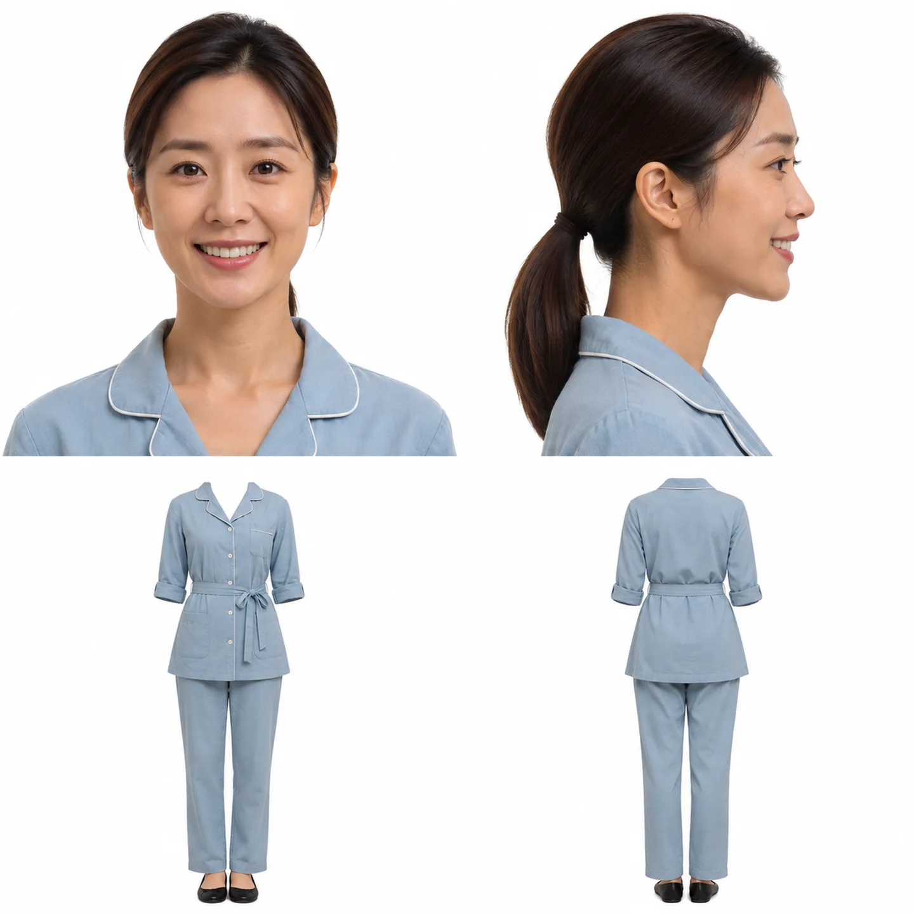
东亚面孔，黑发低扎，浅蓝翻领上衣配白色滚边和同色腰系带。语气温和，倒米时动作熟练。截图未见全身，裤装和便鞋按家居风格补设。四格为正脸、侧脸、无头正面着装、无头背面着装。

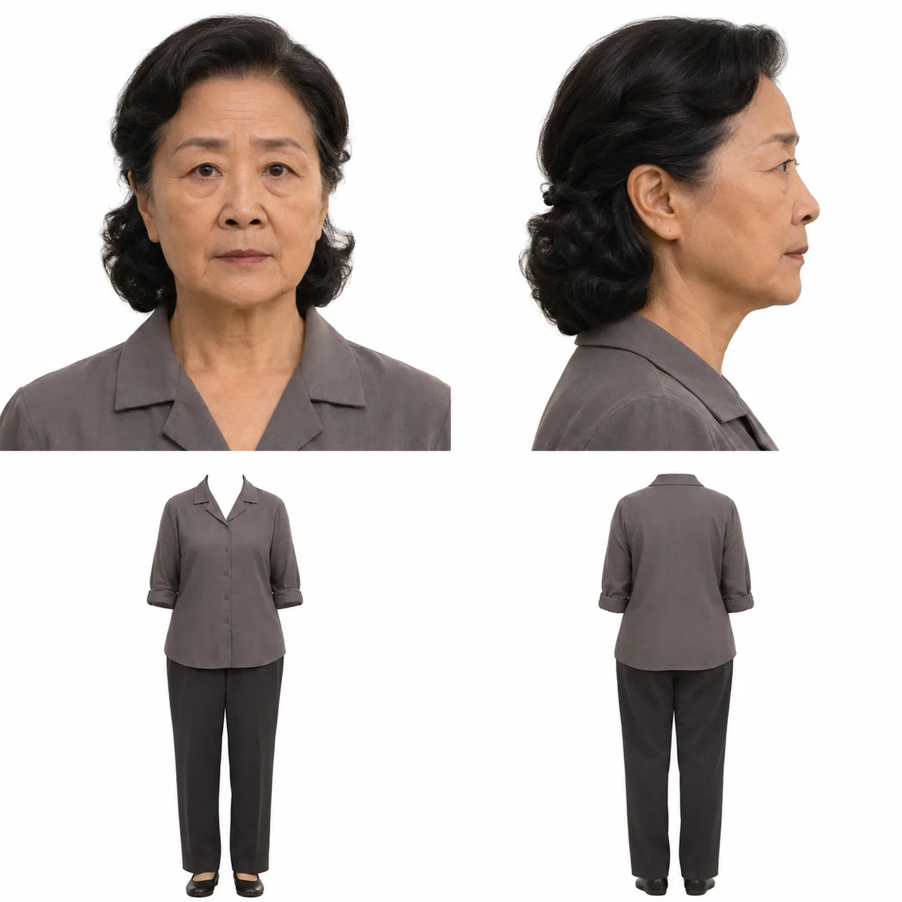
东亚面孔，黑色卷发向后梳，灰色翻领纽扣衫，袖口挽起。约六十岁上下。语气直率，试吃后表情从怀疑转为惊讶。截图未见全身，长裤和便鞋按深灰便装补设。四格为正脸、侧脸、无头正面着装、无头背面着装。
场景与布景

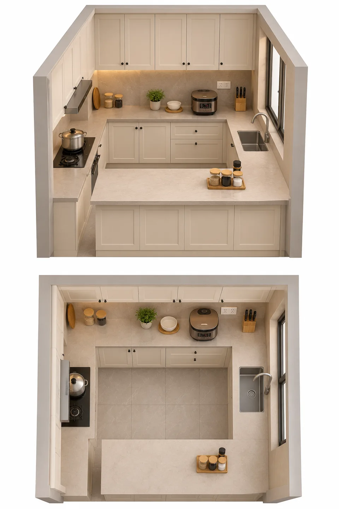
场景设定用于「两人站在厨房岛台前，米袋落在台面」段落。年长女性伸手指向米袋，年轻女性垂眼看台面。
道具与产品

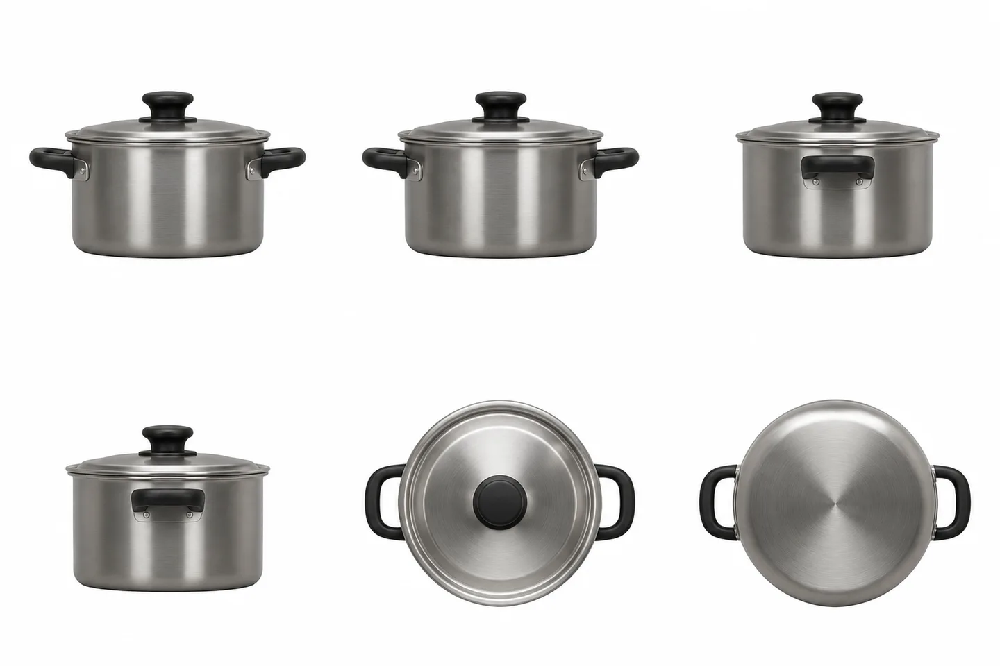
短圆形拉丝不锈钢锅，黑色把手和盖钮。置于左侧炉灶，作为厨房背景摆件。

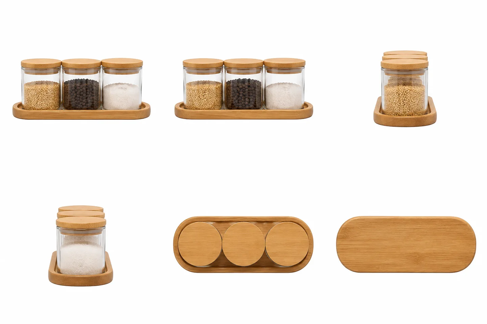
圆角木托盘上放圆形透明玻璃罐，使用浅木盖。罐内以浅褐谷物、深色调味物和白盐区分。用于岛台右侧连续性。

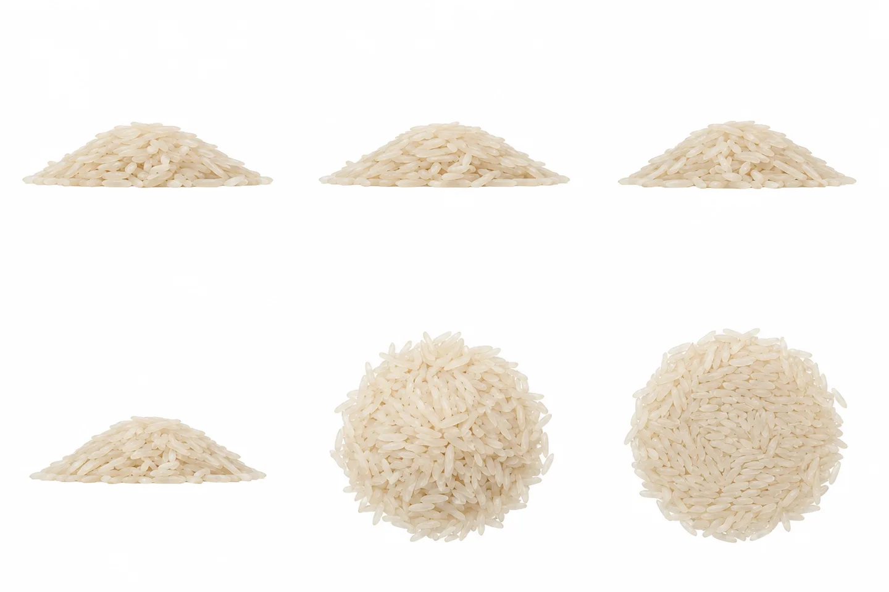
象牙白细长颗粒。用于台面洒落、倒入内胆和产品原料特写。六视图以同一小堆米作为摆拍状态。

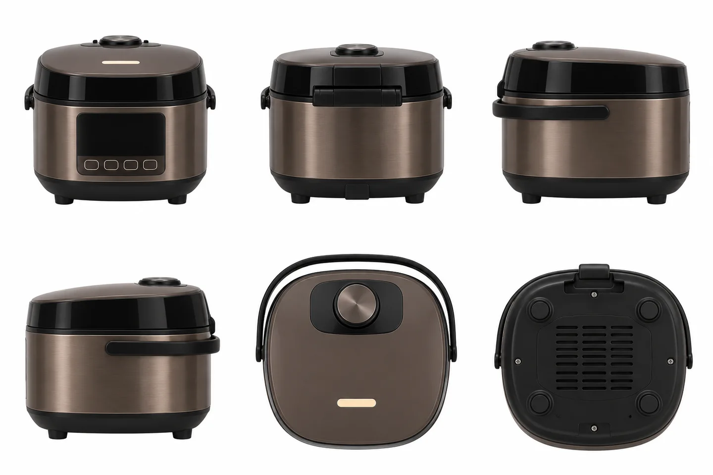
香槟棕金属外壳和黑色椭圆翻盖，侧有把手。用于合盖与煮熟开盖。模型图采用闭合状态，显示屏留白。

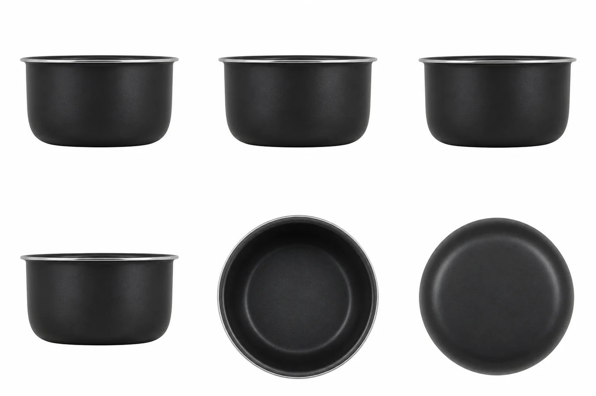
独立圆形黑色不粘内锅，银色薄口沿。用于接住原料米，与电饭煲外壳分开建模。

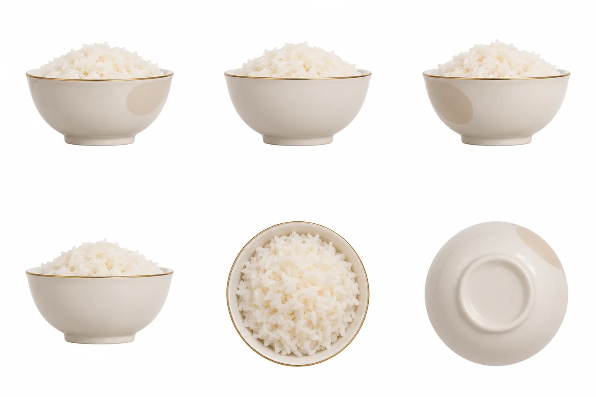
暖白瓷碗、细色口沿和短圈足，内部盛一碗熟白米饭。用于近景盛饭和结尾试吃。

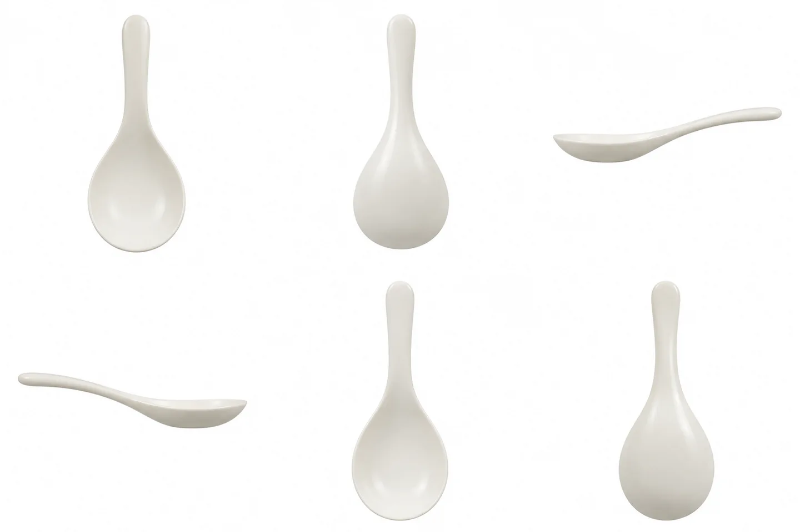
象牙白一体式宽头勺，长柄，勺头圆润。用于从内胆盛出一口熟米饭。

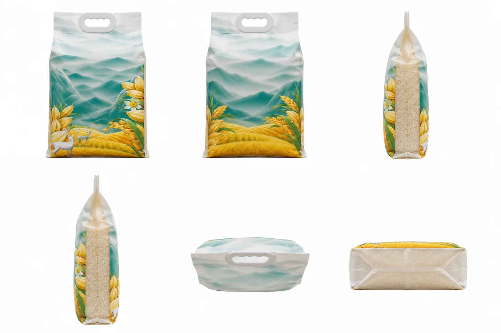
白色印刷膜带提手开孔，青绿色山形图案配金色稻穗，下方透出干米粒。用于摆台、提拿和倒米。包装文字与商标从图中省略。

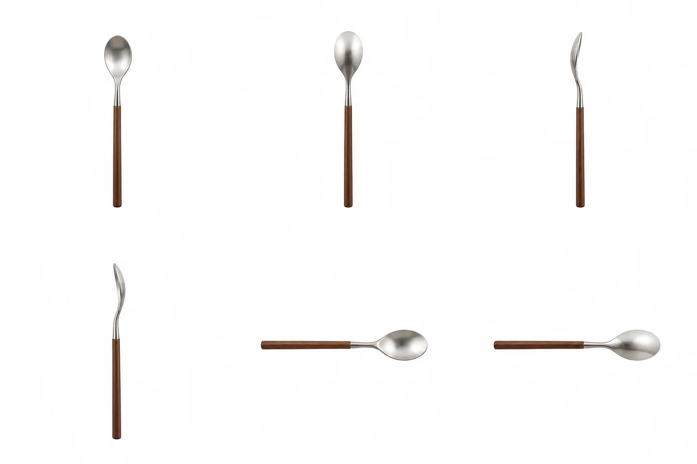
小型不锈钢椭圆勺面，纤细深色柄。用于年长女性试吃和最后反应。